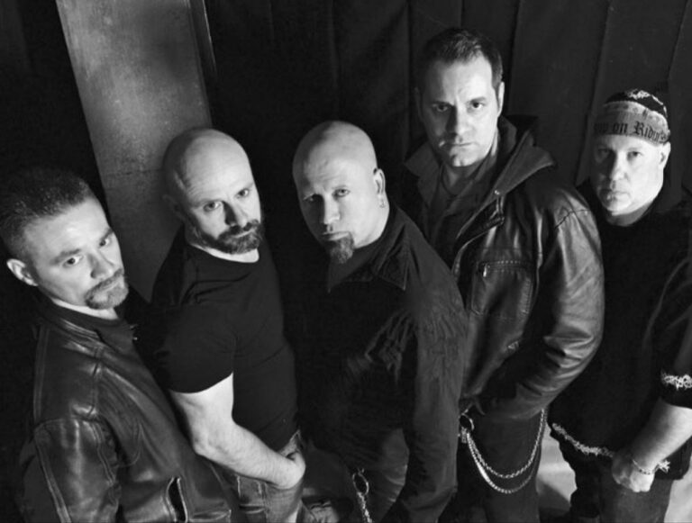

Updated January 15th, 2024:
Wicked Maraya recently made a comeback with their first new music since 2016, and Chapters is out now on Massacre Records. Metal Contraband’s Chelsea recently had a chance to speak with Wicked Maraya frontman Lou Falco about the latest happenings with the band. Check it out below:  Chelsea here on the phone with Lou Falco from Wicked Maraya. You guys just released an awesome new EP, Chapters, out now on Massacre Records. How are you feeling about your new release? We are excited. We are pumped. The response we’ve been getting has just been insane and we’re really proud, that’s the biggest word. Really, really proud and really excited. So let’s talk about Chapters. When I first looked at the EP and noticed every song title has a sequence of “Chapter I, II, III, IV…I feel like that’s kind of unusual to see. So tell me about the storyline and what ties these “Chapters” together. Well, as I’ve been saying a lot, I wish I could say it was my master plan, and I am just so brilliant that I came up with this…but no, actually, it started because we didn’t want to pick song titles. We just, for a while it was, all right, song one, song two, song three, song four, song five on the chart, that’s it. The way we recorded them and then when we started putting them together, I know what I write about. I write the majority of the lyrics and I don’t try preaching to anyone, but I do try to have people feel a vibe of a song. I was kind of noticing that the majority of the songs had a same…I won’t say a concept, but there was a nice, fine little thread running through it that I’ll say a non-specific social commentary about today, and the state of being of today. And I started realizing that, hmm, this is interesting because if we put this song here and move this song here over there, this kind of connects. And then the guys, you know, at some point, we really didn’t talk about it, but I think John had said, you know, it’d be cool, maybe instead of song one, “Chapter I”. And I said, well, these songs can actually have a running theme and a thread between them. So now, it’s like it kind of happened in reverse, and we sat back and really looked at the lyrics, and looked at where the songs were placed and they’re like, will this work? I was kind of shocked because I’m like, it will work. And it really works because, the order we had them in, as in a regular book, first couple of chapters could be about one thing, then you get to like chapter seven or eight and it’s totally different at another part of the book. But in the end, it’ll all wrap up together. So we kind of got excited about that. And then we started thinking of the concept of the old-looking leather book for the cover. And it kind of fits the vibe. Since we went through the same problem with the actual title of the EP that we did with songs, we don’t want to pick a cliché or something that’s been done. I think I might have been me who was like, look, “Chapters I-V”. Everyone was like, simple enough, it could work. As I stated in a bunch of interviews, it’s either people really, really like it or they honestly really, really hate it. We were cracking up at some of the response. But we said, well, it’s our ball, and we’re taking it, and we’re running with it. So hopefully you like it. That’s where it came from. But it wasn’t intended to be a concept record at all. But it’s a place where, when we sat back and went, wow, this actually does work as a “concept record”, or just a record with a theme running through every song from beginning to end. Exactly, that’s awesome and I love that the ideas flowed, it fell into place. That’s when you know it really clicked in, so don’t worry about the any negative feedback if you guys get it because if you feel proud of it, you feel secure in it, like that’s what matters. You’re making music you want to make and putting it out there. It’s a great flow from start to finish for sure and I agree, not only lyrically does it have that sense of chapters and different stories that tie together but it really has that feel musically, because I feel like the pacing kind of…it has a storytelling flow almost, that fits with the “Chapters” theme. Oh, I appreciate that. Because I’m the nerd who sits and reads the books, and when I really sat back and went, “Whoa, wait a minute this does work”, and it’s true, I’m glad you noticed it because the pacing, the way we had the songs, it fits in my head what I saw once we started grasping this concept. And I was like, I hope people pick up on it. So it really means a lot that you do pick up on that because that means it’s there and it’s working. Definitely. And so the last one, “Chapter V”, also was released as a single on its own, which is such a cool track. What is it about this track that stood out for you guys as a single outside of the rest of the chapters? Well, it was a little bit of everything. A little business savvy, a little bit of trying to gauge today’s field to try to do something different. When I wrote the lyrics to it and when John sent me the track and I sang when I was doing the pre-production, the demo at my studio, I kind of sang the chorus in a funny voice and I think I remember him going, what are you doing there? And I’m like, well, I hear it as almost like a kid singing, like a nursery rhyme. That’s what I’m hearing, so I was trying to just put that voice on so you get an idea. And when we got to Pennsylvania, by then we had already known that we had a lot of people, a lot of connections, and we had someone who could contact the JT Lambert Choir up in Stroudsburg in Pennsylvania, which is near Dan’s Studio. And then I spoke to the music director and we told them the concept we had for it, because we thought kids on a song would work because of what the underlying theme is. Children and kids always represent hope and the future and the next step traditionally. And kind of what the vibe of the song is about, even though it ends the record, it’s almost kind of like moving forward to a new something. And if there’s stuff going on that we don’t like in anything, kids, the younger generation, will be the ones to stand up and say, no, I think I need to change something, whatever it may be. And kids are resilient and you can’t keep children down. If they do have something in their mind, they’re going to really try to do it. So we got all the kids from JT Lambert, and when it was finished, it really just connected with all of us. We all sat back and said, “I think this is going to be the one”. And then there is the added little cool element of the kids’ choir on it, which might separate it from one of the other songs we’ve made, but thinking as a single, but it also just flows. I think it’s got a good groove. It’s got aggressive vocals. It’s got mellow vocals. And it’s got vocal harmonies for the big chorus. We just kind of felt it was the most complete song and that it would do well for listeners. And so far it has been. Really proud of the feedback we got. It’s an awesome track and I feel like it also ties in with what you were saying before about how the album wraps up on a tone that ties together the whole album. Having that different sense of the aggression and the mellow and a big choir kind of feeling, it does feel like an epic ending to a book in a way. It does feel like it brings it to a close really nicely. Oh cool, yeah, thank you. That’s what we were going for. I greatly appreciate it. That’s definitely what we were going for. Awesome. And then the music video for “Chapter V” gives it some great visuals to go with that too. I mean, it feels live but with special effects and some cool visuals overall. And it was directed by Tom J. Flynn who’s done some great work with other metal bands and some film as well. So how did you get connected with him? Well, John was acquainted with him. John produced a band, Psycho Hill, they’re a more newer metal sounding band, but they’re phenomenal. He had done a video for them and John was like I think Tom can get what we’re going for, and we explained what the song was about and he’s like, “I like it, I’d like to get you guys playing, and going on behind you, around you, chaos. Like social…basically, like I said, there’s a theme running through it, a little social commentary like let’s put, whether it’s social chaos in a bad way, a good way, just different things, but done quickly so it’s snippets. I’m not trying to preach to anyone lyrically directly. He’s like, let’s not have anyone be able to focus too much on what’s going on in the background, but let’s just throw it in there to cover all aspects of what could be happening in society, and we really kind of dug the vibe on it. I thought it was great and besides the fact that we really haven’t done anything, with the exception of when we released the two new songs in 2015, which was let’s be honest, eight years ago. Before that it was like thirty. So he was like, get up and just play, get the band, let everyone see you. And, you know, for a while we were really trying, we were like, should we do something more shadow so we don’t look like the old guys trying to come back and rock? And he’s like, “No, I think what I have in my mind and the lighting I’m going to use, it’s going to be good”. And, you know, what made us really happy with the video and even with the songs is the younger generation, and I’ve stated this a lot, we’re very excited about it. We played the music and showed the video to like, you know, my stepdaughter, my goddaughter, 16, 17 years old, the guys in the band have kids and friends…and the feedback from that age group, when we were expecting, you know, here it comes, “Listen, you old guys trying to be relevant, stop it”. We got, “Wow, this is cool. Can I show this to my friends? Can I let my friends hear this? Can I play this? Can we have this? Can my friends have this?” And we were like, wow, wait, what? And the feedback we got from a whole different generation…now, we were hoping for it, we wanted it, but the fact that we’re getting it, especially with “Chapter V”, and honestly, the whole EP. I think it’s a nice little check mark on the music scene today and the fact that everyone’s a lot more accepting of every kind of music and everyone’s listening to everything. So I think it’s helping us out a lot with that because we’re being exposed to a lot of different people who, maybe 25 years ago, would not even listen to something like this. But now it’s like, yeah, this is cool. So what’s old is new again, I guess. Definitely. But you guys have a modern enough sound that it doesn’t feel like it’s something that you’re just trying to “come back” in that sense. It feels like new music — I mean, it is new music that you’ve written now, and it does have that new vibe. But, more on Wicked Maraya as a band, you guys had released albums mostly in the 90s and then a hiatus until 2015, like you mentioned. And now, this being the first new music since then that you’ve released, what keeps Wicked Maraya coming back together even when some time has passed? Well, I’ve been using the phrase, “unfinished business”. Because we’ve always felt we had a lot more in us to put out. And it just…the timing was never right. And after we did the live release in 2015 and we put the two new songs out…you know, “Suicidal Dawn” got a good response, the video got a great response. But, we as a band, the music scene had changed and I don’t think we were ready to do certain things that I think we needed to do then. And we were happy with it, but we were still like, hmm, I think we can do more. And the timing was right on this, everyone’s schedules worked out, and we all agreed that we are going to do something and we’re going to put out the best stuff we’ve ever done or at least try to and write what we want, not write for a certain time, a certain era, a certain style, which happens to many bands throughout their career. We said, we’re just going put out what is Wicked Maraya. And it’s going be modern because it’s 2023, but it’s going to have our feel as to what we do. And I do feel that we captured that and we want that, I think to prove it to ourselves, and then just see what we could do. And now that this is going how it’s going, we have more unfinished business now that we didn’t even know. I think we want to…we want to play live. We’re contacting tour promoters, booking agents. We understand that numbers and socials and everything have a lot to do with everything these days. And, you know, harkening back to what I said about preparedness, this time we’re more prepared. I mean, we’ve got a team together, the band is hired a team together, social media promotion, streaming and radio promotion, streaming video promotion. You know, we hired the Muns Master from Skateboard Marketing handling our radio and stuff. So we’ve decided that we are going to handle a lot of things on our own along with Massacre. Massacre is doing a great job, I’ve got a bunch of interviews, they’ve, released it digitally, etc., etc. We said we’re going to do everything we can to take it to the next level. The responses have been great, numbers are growing. And now we want to start working on, it’d be great if we could hop over to some of the festivals, whether in the States or over to Europe next year. The band needs support, two weeks, three weeks, hey, we’re ready to go. We want to keep this rolling. We’ve got some other music, as they say, “in the can”, some cool stuff that John and I did that we’ll have maybe first quarter of next year. And then we’re hoping for a full eight songs by the end of the year and keep this rolling. I mean, I feel we’ve got so much more in us, especially what we came up with here. It just came effortlessly and it was like, “alright, it’s working”. I agree it is absolutely working. You’ve got some great tracks out there, Chapters is a killer EP, and it sounds like collectively, you guys are all on the same page. You’ve got a great energy and you kind of know where you want to go with this next. So I think that’s some great projections for Wicked Maraya, I wish you guys the best of luck in promoting this album moving forward, and hopefully we’ll be seeing you guys out of the road sometime next year. Thank you so very much. I just posted the charts from Metal Contraband, popped them up on our socials, so we went up to a nice spot, 13 is the lucky number today, we’re at 13 everywhere. Thank you for the support, thank you for this interview Chelsea, and we’re looking forward to meeting you out there on the road.